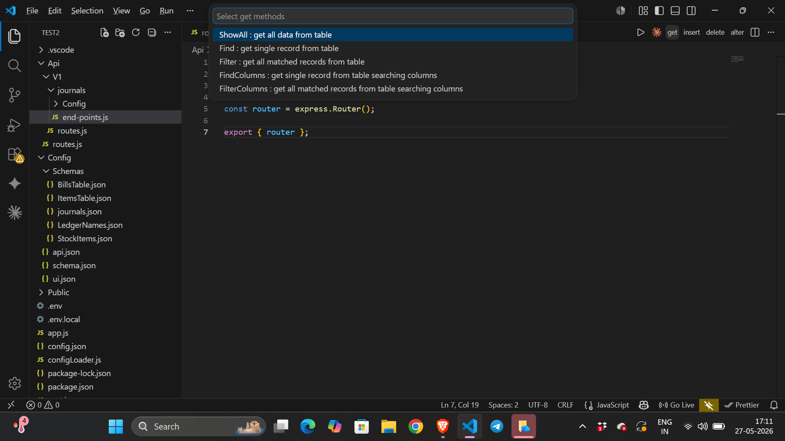
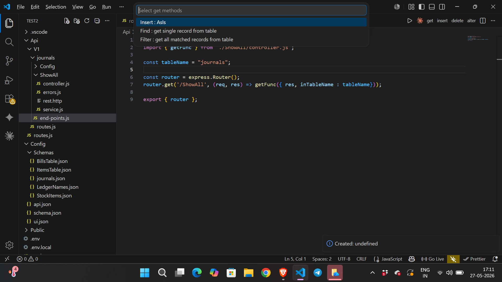
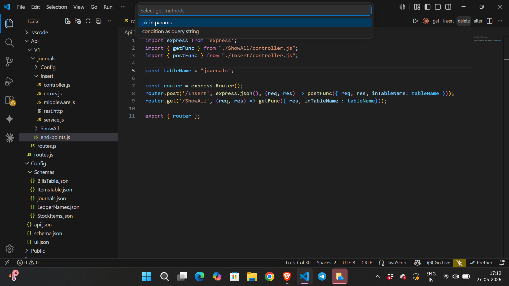

Open:
Api/V1/journals/end-points.js
Click:
get
Select:
ShowAll : get all data from table

This generates:
ShowAll/
With files:
controller.js errors.js service.js rest.http
Now click:
insert
Select:
Insert : AsIs

This generates:
Insert/
With files:
controller.js errors.js middleware.js service.js rest.http
Now click:
delete
Select required delete type.

This updates:
end-points.js
Automatically adds imports and routes.
Back to Home